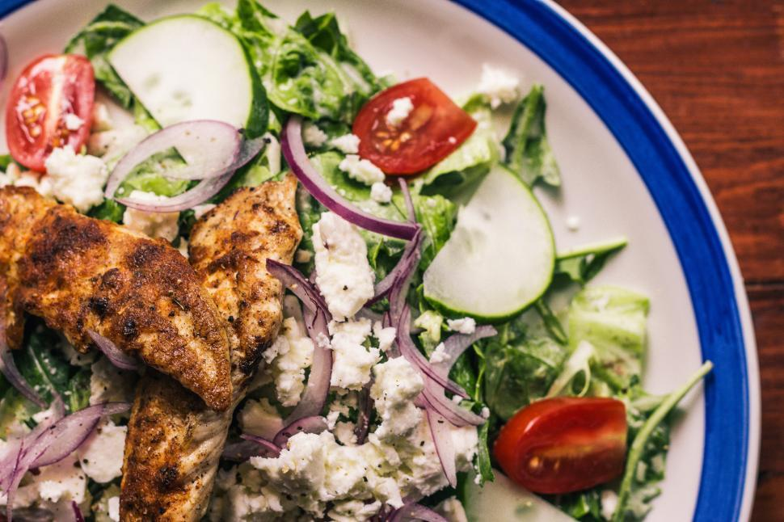

Fresh, crunchy, healthy salad packed with proteins that comes togheter in a matter of minutes.
Turn on your stove on medium heat, grab a griddle and let it come to temperature.
In the meanwhile fill a pot with water, then put it on the stove, Once it has reached the boilling point genlty lower your eggs, add a dash of salt and let them boil for roughly 10minutes.
Take your chicken breast, season it with salt and pepper, on both sides, once your griddle it's nice and hot add 2ml of grapeseed oil, or any other high smoke point oil, and spread it evenly on the surface,
place your chicken on top and grill it for a couple of minutes on each side or untill it reaches an internat temperature of 74C.
It's time for you veggies, grab a knife and slice everything into bite size pieces.
At this point both your eggs and chicken breash should be done cooking, take your eggs and run them under cold water to stop the cooking process, once cold peel and dice them up, after that slice your chicken into strips.
Grab a bowl and add everything to it, drizzle some extra virgin olive oil, some lemon juice, and mix it untill everything it's evenly distributed.
Check for seasoning and adjust if needed.